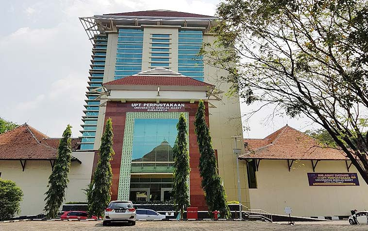

Perpustakaan
- UPT PERPUSTAKAAN SEBELAS MARET

UPT Perpustakaan Universitas Sebelas Maret yang telah berstandar ISO 9001:2008 merupakan resource center yang mempunyai fungsi sangat strategis dalam kegiatan akademik di UNS, yaitu untuk mendukung, memperlancar serta meningkatkan kualitas pelaksanaan program perguruan tinggi melalui pelayanan informasi yang meliputi aspek-aspek pengumpulan informasi, pengolahan informasi, pemanfaatan informasi, dan penyebarluasan/penyebaran informasi. Informasi dalam hal ini meliputi produk intelektual dan artistik manusia di mana perpustakaan sebagai lembaga yang bergerak dalam bidang ilmu pengetahuan dan informasi selalu berkembang seirama dengan perkembangan pemikiran dan kultur masyarakatnya.
Klik disini untuk mengetahui informasi lebih lanjut
Universitas Udayana secara sah berdiri pada tanggal 17 Agustus 1962 dan merupakan perguruan tinggi negeri tertua di daerah Provinsi Bali. Sebelumnya, sejak tanggal 29 September 1958 di Bali sudah berdiri sebuah Fakultas yang bernama Fakultas Sastra Udayana sebagai cabang dari Universitas Airlangga Surabaya. Fakultas Sastra Udayana inilah yang merupakan embrio daripada berdirinya Universitas Udayana.
Berdasarkan Surat Keputusan Menteri PTIPNo.104/1962, tanggal 9 Agustus 1962, Universitas Udayana secara syah berdiri sejak tanggal 17 Agustus 1962.
Klik disini untuk mengetahui informasi lebih lanjut

Berdiri pada tahun 1970, Perpustakaan USU merupakan unit penunjang kegiatan pendidikan, pengajaran, penelitian, dan pengabdian kepada masyarakat di Universitas Sumatera Utara. Perpustakaan berfungsi untuk menyediakan, mengelola, menyimpan, dan memelihara bahan perpustakaan. Berpusat di jantung USU, Perpustakaan USU telah membuka 15 cabang yang berlokasi di fakultas dan rumah sakit USU dengan menerapkan sistem pelayanan yang terintegrasi dengan Perpustakaan Universitas. Dengan empat penghargaan nasional dan delapan penghargaan internasional, Perpustakaan USU berkomitmen untuk menjadi suatu perpustakaan perguruan tinggi yang terkemuka dan unggul dalam penyediaan akses terhadap sumber informasi global dan layanan secara tepat waktu, tepat guna, dan efektif.
Klik disini untuk mengetahui informasi lebih lanjut